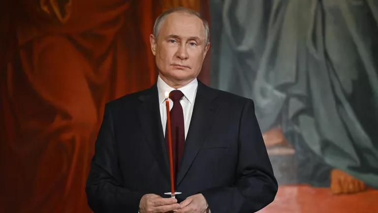
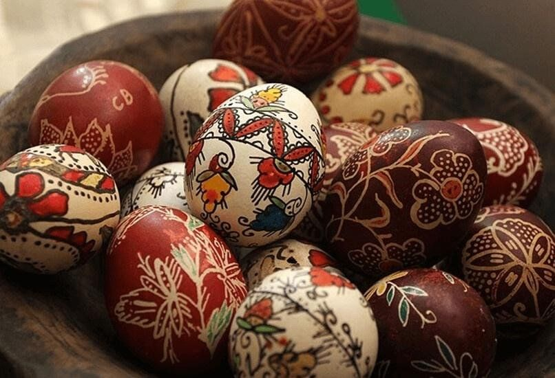

Путин поздравил россиян с Пасхой
Пасха, один из главных православных праздников, ежегодно объединяет миллионы россиян вокруг духовных традиций и семейных ценностей. В 2025 году президент России Владимир Путин поздравил россиян и всех православных христиан с этим светлым праздником. Его поздравление было опубликовано на официальном сайте Кремля.
В своем обращении Путин отметил, что Пасха — это праздник, который дарует любовь и надежду, веру в добро и справедливость, объединяет людей вокруг вечных духовных и нравственных идеалов. Он подчеркнул, что этот день напоминает о важности милосердия и взаимопомощи.
Президент особо выделил роль Русской православной церкви и других христианских конфессий в укреплении социальной гармонии, воспитании подрастающего поколения и поддержке семейных традиций. Эти институты, по его словам, играют ключевую роль в сохранении культурного и духовного наследия России.
Путин также выразил признательность религиозным организациям за их поддержку защитников Отечества и их семей, а также за патриотическую, благотворительную и просветительскую деятельность. Он отметил, что такие усилия способствуют укреплению единства общества.
Особое внимание в поздравлении было уделено Святейшему Патриарху Московскому и всея Руси Кириллу. Путин подчеркнул, что под его руководством Русская православная церковь продолжает многовековые традиции, помогая людям обрести веру, поддерживая молодежь и укрепляя семейные устои.
Президент также отметил значительный вклад Патриарха Кирилла в развитие сотрудничества между государством и церковью, а также в поддержку военнослужащих и их семей. Это сотрудничество, по словам Путина, имеет важное значение для стабильности и процветания страны.
Завершая свое поздравление, Владимир Путин пожелал всем россиянам здоровья, благополучия и успехов в труде на благо Отечества, призвав продолжать традиции милосердия и взаимопомощи, которые лежат в основе пасхального праздника.